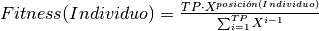
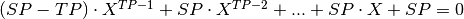
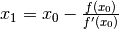
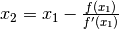
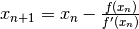

NonLinearRankingFitness (script)¶
Se implementa la asignación de Fitness conocida como Non-Linear Ranking
(ó Ranking No Lineal) que, a diferencia de los demás métodos, la aplica
usando como base la posición del Individual (ó Individuo) en la Population
(ó Población) como resultado de las operaciones de ranking
(véase Model/Community/Community.py).
Posteriormente el Fitness se constituye tomando la posición del Individuo y
una función polinomial (la cual es una función no lineal, de ahí el nombre).
La fórmula es la siguiente:

Donde:
TP es el tamaño de la Población.
Posición(Individuo) es la que ocupa éste de acuerdo al ranking previo.
X es la solución al polinomio: 
SP (Selective Pressure ó Presión Selectiva) varía entre 1 y 2.
Haciendo un análisis somero en la fórmula, se puede apreciar que los
Individuos con mejor Fitness serán aquéllos que se encuentren en las últimas posiciones,
sin embargo los rankings que se manejan en este proyecto son inversamente proporcionales
a la calidad de los Individuos (véase Model/Community/Community.py);
por ello es importante ordenar a los Individuos de manera descendente para que la operación tenga sentido.
La función encargada de esto se llama sort_individuals y está en Model/Community/Population/Population.py.
-
assign_fitness(population, fitness_parameters)¶ Utilizando la explicación concretada al principio, se realiza la implementación de la asignación de Non-Linear Ranking Fitness (ó Fitness de Ranking No Lineal).
-
calculate_root(polynome, x_0, epsilon)¶ - Calcula la solución de un polinomio usando el método Newton-Raphson.
- A grandes rasgos el funcionamiento es el siguiente:
Tomando como base el punto se obtiene
se obtiene  así:
así:
Una vez obtenido se calcula  de la misma manera:
de la misma manera:
El proceso se repite para ‘n’ iteraciones hasta que el valor alcance la precisión de epsilon ó el polinomio ya no tenga más derivadas. Concretando lo anterior:
Cuando se acerque a epsilon ó cuando el
polinomio no sea más derivable el método se detendrá.
se acerque a epsilon ó cuando el
polinomio no sea más derivable el método se detendrá.Parameters: - polynome (List) – El polinomio en el que se buscará la solución.
- x_0 (Float) – el punto sobre el que se hará la evaluación del polinomio.
- epsilon (Float) – La precisión decimal que se necesita para poder devolver el resultado.
Returns: La solución al polinomio.
Return type: Float
-
derivate(polynome)¶ Método que calcula la derivada de un polinomio, modificando directamente éste sin regresar nada.
Parameters: polynome (List) – El polinomio inicial.
-
evaluate_polynome(polynome, x)¶ Evalúa un polinomio en un cierto valor.
Parameters: - polynome (List) – El polinomio a evaluar.
- x (Float) – El valor sobre el que se evaluará el polinomio.
Returns: La evaluación del polinomio.
Return type: Float